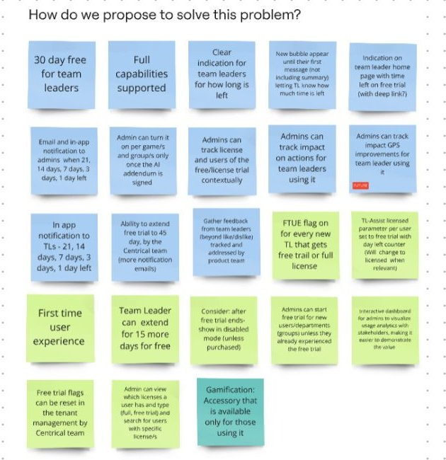
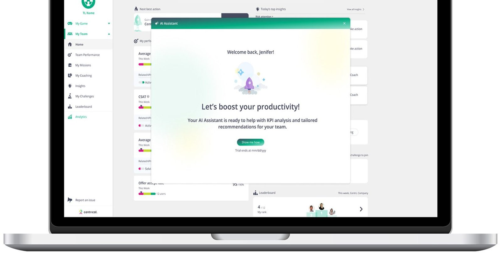
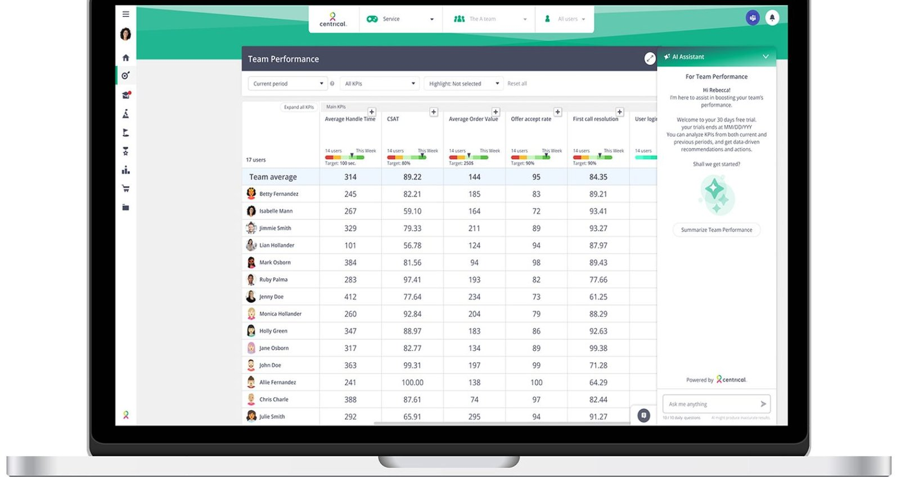
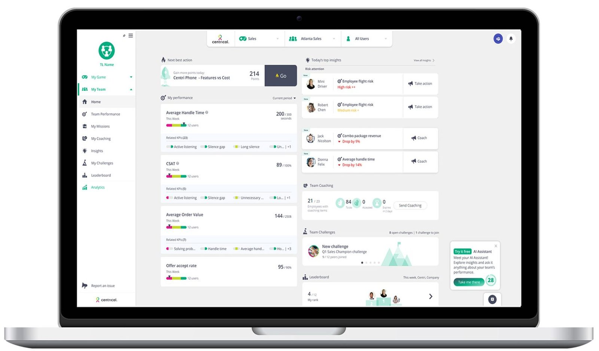
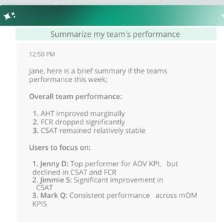
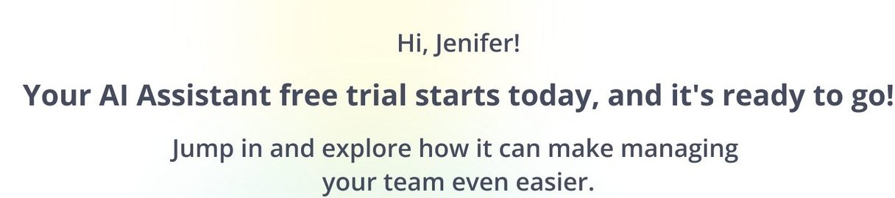
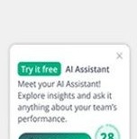

Designing a free trial for users who can't buy
Centrical's AI Assistant was a paid add-on for team leaders, but team leaders couldn't buy it: purchasing was an organization decision. I designed a 30-day trial that hooks team leaders and proves the value to the people who sign the budget.
- Role
- Product designer and project owner
- Product
- AI Assistant, a paid add-on
- Model
- B2B2C: the company buys, team leaders use
- Trial
- 30 days, with a possible 14-day extension
The user and the buyer are different people
Centrical's AI Assistant helps team leaders analyze their team's KPIs and get recommendations. The goal was to grow adoption, but enterprise customers hesitated to pay for an AI tool before seeing what it does for their teams.
A free trial was the obvious fix, but a standard one wouldn't work. Team leaders can't purchase: admins and upper management decide, and they never use the assistant. If only the team leader saw the value, the trial would end with a happy user and no sale.
Grow ARR by making the AI Assistant an add-on organizations choose to pay for.
Team leaders need real value quickly, inside their daily work.
Admins and budget owners need evidence: who used it, how much, and what it changed.
What I owned, and the rules of the system
- Ran discovery with stakeholders: who it's for, why now, and how to solve it.
- Designed two flows: the team leader flow and the admin flow.
- Planned the trial week by week, from first login to extension or purchase.
- Designed the final UI inside the existing Centrical product.
I owned the project from discovery to final design, working with the PM, developers and the product team. It was my final project at Centrical.
Treat the trial as a sales tool, not a countdown
I mapped the problem with stakeholders on three boards: who it's for, why now, and how we propose to solve it. The first board made the split clear. Team leaders are the key users, but admins configure the product, track its value and carry it to the budget owner.
The person who sees the value can't buy it. The trial has to carry that value all the way to the person who pays.
Grow ARR from the paid AI add-on
Team leaders can't purchase on their own
The free trial is a sales tool, not a countdown
So the trial had to do two jobs at once:
- For team leaders: full capabilities from day one, nothing gated, and a clear view of time left, so they build a habit fast.
- For admins: who is using it and the impact on team KPIs, plus reminders as the trial runs down, so the value reaches the budget owner before it ends.
Email and in-app reminders go to both admins and team leaders, so the people who decide hear about the value while there is still time to act.

A 30-day journey with a plan for every week
The principles: reduce cognitive load, give value immediately, show progress, remove friction, and build confidence through guided exploration.
| Stage | What the team leader gets |
|---|---|
| Week 1 · Discovery | Onboarding checklist (connect data, first project, invite the team, short tutorial), daily nudges and quick wins. |
| Weeks 2–3 · Deep exploration | Advanced features in context, usage-based recommendations and performance insights. |
| Week 4 · Conversion | A proactive extension offer and a clear path to purchase. |
| Extension | 14 more days, enhanced access, and a dedicated success consultation. |
Day 1: show the value in the first screen
The trial opens with a personal welcome and a live example of the assistant summarizing team performance: the first thing a team leader sees is an answer, not a feature list.

Inside the daily work
The assistant lives where team leaders already work, next to team performance data and on the home dashboard. A small reminder keeps the time left visible without getting in the way.




The assistant summarizes the team before showing any feature

The trial opens by name, on day one

A small card with the days left, inside the daily dashboard
What I delivered
| Deliverable | For |
|---|---|
| A trial designed for two audiences: team leaders who use it and admins who buy it | Product and sales |
| Two complete flows: the team leader flow and the admin flow | Development |
| A week-by-week trial plan, from first login to extension or purchase | Product and Customer Success |
| Final UI in the existing product, handed off to development | Development |
What I learned
In B2B2C, the person who loves the product and the person who pays for it are different. Designing only for the user creates fans, not customers. The trial worked only once it served both.